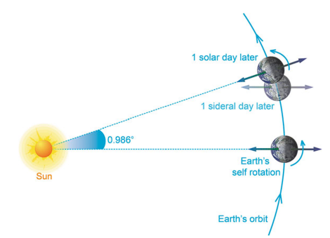
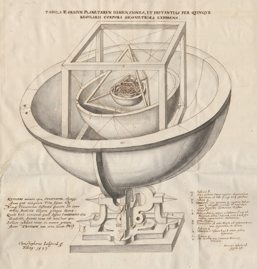
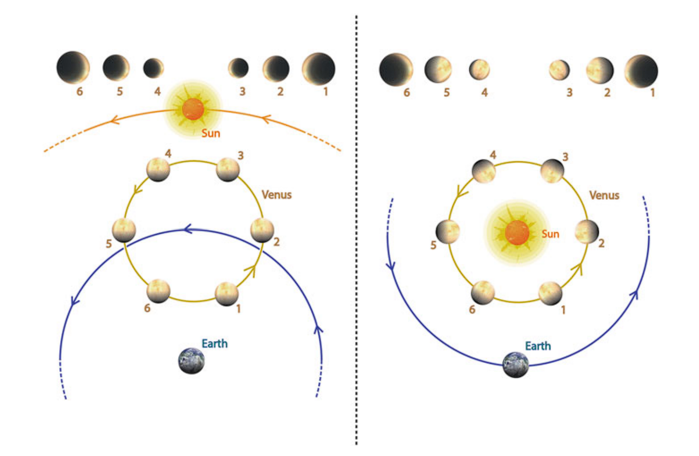
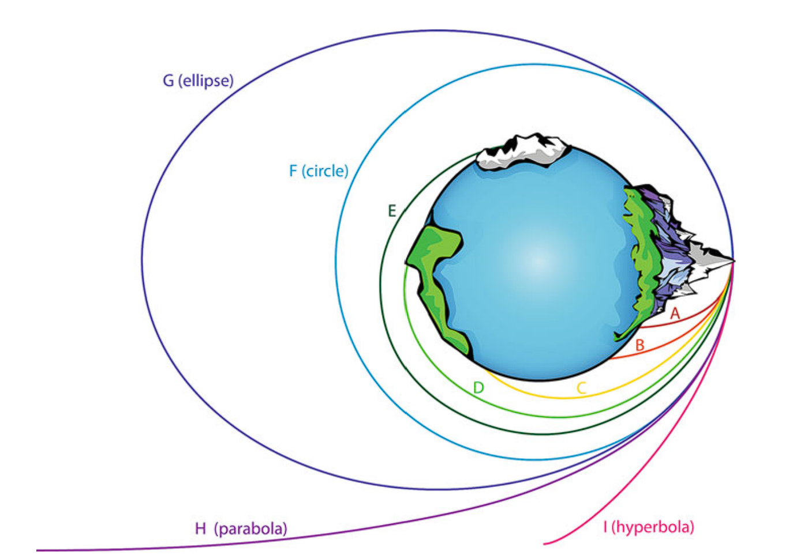

今夜星光闪闪（叁）
E pur si muove! (然而它仍然在转动！)
—— 伽利略·伽利莱
This article is a self-administered course note.
It will NOT cover any exam or assignment related content.
Copernicus Revolution
1473 年，当尼古拉·哥白尼 (Nicolaus Copernicus) 降生在皇家普鲁士 (即波属立陶宛) 的托伦时，欧洲正深陷百年战争和黑死病的阴影。但同时，造纸术的传入和古腾堡印刷机的发明，预示着前方的一场科学革命。
哥白尼 10 岁丧父，被身为瓦尔米亚主教 (Bishop of Warmia) 的舅舅抚养。成年后，他在意大利接受了全面的文艺复兴式教育，并在 24 岁被舅舅安排到弗龙堡大教堂任僧正 (canon of the Cathedral of Frombork)。
神职人员的生活优渥，俸禄稳定。哥白尼先在海尔斯贝格堡 (Heilsberg Castle) 担任其叔叔的秘书，1512 年主教死后，他回到弗龙堡教会，蛰居在教堂的高塔中潜心研究天文学长达 40 年。
早在 16 世纪初，儒略历积累的误差已经让教会焦头烂额 —— 复活节已经滑向盛夏时期！我们推测对历法的纠错是哥白尼转向天文学的重要契机 (他在意大利的大学里修习的是法律与医学)，但最终他却给出了一个颠覆宇宙的假设：日心说。
Retrograde is only apparent.
托勒密体系认为行星的逆行是它们真的在「倒着走」，即行星在本轮上的运动方向与本轮在均轮上整体的前进方向相反。
而在日心体系中，逆行现象其实是一种视觉错觉：行星并没有真正后退，只是因为地球运行得更快，从地球上看去，行星就像短暂地「倒退」了一样。这种解释不仅更优雅，也完美符合行星绕太阳运行的规律。
如果我们认同这个说法，行星的 synodic period (两次合日/冲日间时间) \(S\) 与 sidereal period (运行一周的时间) \(P\) 将不再毫无关系。令地球的 sidereal period 为 \(E=365d\)，简单的追及问题即可推出： \[ \begin{aligned} \frac{1}{S_{\text{inferior}}}&=\frac{1}{P_{\text{inferior}}}-\frac{1}{E}\\ \frac{1}{S_{\text{superior}}}&=\frac{1}{E}-\frac{1}{P_{\text{superior}}} \end{aligned} \] Planet Ordering.
托勒密宇宙体系中行星的排列顺序，若仔细推敲其实缺乏合理依据。这一排序建立在「sidereal period 较长的行星轨道半径更大」的假设之上——虽然这个假设乍看似乎合理。
且不论该假设本身是否成立，单就太阳、金星和水星而言：三者的 sidereal period 都是一年，但为何水星轨道被安排在金星内侧？托勒密对此的解释是，太阳的地位如此重要，其两侧必须保持行星数量对称。这种说法显然牵强附会，不过有趣的是，他确实因此误打误撞猜对了顺序。
日心说宇宙则不同：行星的轨道 (以地日距离 AU 为单位) 是可以用三角关系等被定量计算的！比如，内行星的轨道半径 \(r=AU\sin \theta\)，其中 \(\theta\) 是 maximum elongation。外行星则稍微复杂些，但其轨道同样也能被锚定。
- 由内而外：太阳，水星，金星，地球，火星，木星，土星，天王星，海王星
天体运行论六卷.
天体运行论六卷 De Revolutionibus orbium coelestium libri sex 是哥白尼毕生的研究成果。总结下来，他提出了；
- 宇宙的中心在太阳的附近
- 宇宙的顺序由内而外是：太阳，水星，金星，地球，火星，木星，土星，与遥远的恒星
- 天体在本轮上运动，本轮圆心在均轮上运动 (哥白尼你还是丢不掉！)
- 地球有三种类型的运动：绕轴自转，年行公转，与自转轴旋转 (引起了岁差)
- 行星逆行是地球与行星间相对运动导致的观测效应 (apparent effect)
- 地日距离与太阳和遥远恒星间距离相比可忽略。
哥白尼最初并未打算公开他的研究成果；这或许与他身为神职人员，不愿公开挑战教会权威有关。如今我们能够看到这些成果，全赖他的挚友 Tiedemann Giese 和唯一的学生 Georg Joachim Rheticus 的极力劝说。
Bruno and the Infinite Universe
天体运行论 的出版并未在当时的学术界掀起波澜：
- 哥白尼模型并不比托勒密模型更简洁：它甚至动用了比托勒密模型更多的本轮。
- 哥白尼模型的预测精度也并未取得明显突破。
- 可以证明，哥白尼的日心说模型与托勒密的地心说模型在数学结构上等价：首先，哥白尼体系仍然恪守亚里士多德「完美匀速圆周运动」的理论范式；其次，其拟合模型所依据的观测数据与托勒密体系完全同源。
从科学意义上来讲，哥白尼体系并不比托勒密体系更优。那么，哥白尼究竟为后世留下了什么？
也许连哥白尼自己也不会想到，他苦心研究 40 余年的科学成果，产生的影响却不那么「科学」；「太阳才是中心」，这视角的转变本身就蕴含着颠覆性的能量。这位终身籍籍无名的教士，为中世纪的神权社会与经院哲学敲响了丧钟。
Old Observation, New Explanation.
哥白尼体系首次为大量传统天文观测提供了全新的理论框架，并在某些关键议题 (如行星轨道排序，地球-内行星本轮圆心-太阳共线，地日连线//本轮圆心外行星连线平行) 提供了更自然可信的解释。

A Much Larger Celestial Sphere.
在双球宇宙模型中，我们假设地球的尺寸远小于天球。该假设的观测依据是：地平线总是 (几乎) 将天球一分为二。通过测量冬至点在西方地平线沉没时夏至点与东方地平线的夹角，可以确定地平面与共点的天球平面的夹角为 \(\theta=0.1°\)。
- 在地心说中，\(\sin \theta =r_{\text{Earth}}/r_{\text{Celestial Sphere}}=0.017\)
- 在日心说中，\(\sin \theta=r_{\text{Earth Orbit}}/r_{\text{Celestial Sphere}}=0.017\)
根据哥白尼的计算，地日距离是地球半径的 1400 倍；也就是说，日心说模型中的天球半径是地心说模型中的 1400 倍！
地心说中层层紧密堆叠的行星壳被拉开了；最外围的土星轨道与天球之间现在突然涌入了巨大的「空白」。被拘束在核心中的地球被「松绑」了，但同时，一种莫名的恐慌不安也会接踵而至：上帝创造这片空白是为了什么？
Infinite Universe & The Collapse of Heaven.
这还没完！在日心说中，银河的升落不再是遥远的天球绕地旋转所致，而是源自于地球本身的自转。哥白尼很满意于这一解释：庞大的天球与较小的地球，显然是后者更容易产生旋转。但他没想到的是，这为宇宙无限伦理埋下了伏笔。
既然天球不再旋转，恒星被「固定」在天球表面的认知也失去了其必要性；不同的恒星可以分布在不同的空间深度，它们的光芒仅仅是天球上的投影。如果真是如此，宇宙将不再被天球所限，进而蔓延到无限的空间：这十分危险！
在一个无限的宇宙中，谈论「中心」更加失去了意义；所有位置都变得等价，无论是地球，太阳，还是天球之外，都失去了特殊性。基督教所宣称的天堂-地球-地狱 (Heaven-Earth-Hell) 的宇宙等级秩序断裂了。上帝如何栖身在一个不再特殊的世界？不仅如此，如果地球不再特殊，其他行星上是否有亚当和夏娃的后代？我们真的是上帝的选民吗？降生在地球的耶稣的死能否拯救其他行星上子民的灵魂？圣经为何没有说明这一切？
拿坡里王国诺拉 (Nola) 的乔尔达诺·布鲁诺 (Giordano Bruno) 是首位公开提出这些诘问的哲人。在他的 论无限宇宙和诸世界 On the Infinite Universe and Worlds 中，他认为宇宙是统一的、物质的、无限的和永恒的，在太阳系外还有不计其数的天体世界。
布鲁诺的多元宇宙论，与其对经院哲学，神学，亚里士多德-托勒密体系的露骨批判，招致了罗马宗教裁判所的恐惧与仇恨。最终，他被控以「异端邪说」罪在威尼斯被捕，关押在离梵蒂冈不远的圣天使城堡中。被囚禁的八年间，布鲁诺始终没有「悔改」：最后于 1600 年 2 月 17 日在罗马鲜花广场被处以火刑。
无论如何，火已经烧起来了。而这就是哥白尼与其工作真正的伟大之处；这种伟大只有在后世才能够慢慢显现。
Tycho's New Star
哥白尼的工作接下来由丹麦贵族第谷·布拉赫 (Tycho Brahe) 继承发展。第谷因其对天象全面而精确的观测而著称。
- 1572 年 11 月 11 日，26 岁的第谷在仙后座观测到一颗新星 —— 其亮度之强甚至白昼可见。这个现象轰动了欧洲天文学界，因为自公元前 125 年依巴古记录以来，整个 1700 年间从未有过新星观测的记载。第谷在其随后出版的著作 论新星 De Nova Stella 中指出这颗星远在月球轨道之外，属于遥远的恒星天球。
- 1577 年 11
月，第谷在两个月间详细观测并记录了一颗长尾彗星的轨道。一直以来，彗星，流星等短时天体都被认为是一种大气现象
(atmospheric
phenomena)。但与欧洲各处的记录对比时，第谷却发现这颗彗星几乎不存在视差
(parallax)
现象。据此他计算出该彗星的位置在至少六个地月距离以外。
- 视差：从不同位置被观测同一物体时产生的角度差异。
这两个发现从根本上动摇了亚里士多德宇宙体系：天界并非永恒不变，新恒星能在天球上产生 (是否暗示着旧恒星也可能消散？)；月上/月下世界的划分也失去了说服力，因为彗星这样的短时天体居然出现在月球轨道之外。
获丹麦国王腓特烈二世 (King Frederick II of Denmark) 资助后，第谷先后在汶岛(Hveen) 建造了天堡 (Uraniborg) 与星堡 (Stjerneborg) 天文台，配备有当时最先进的观测设备，可称是历史上首个国家资助的大型天文设施。(如果有机会一定要去看看！)
在这里工作的 20 余年间，第谷：
- 系统性的重绘星图 (上一次还要追溯到依巴古)，测定了千余颗恒星位置与行星轨迹，把观测精度提高了两倍有余。
- 纠正了岁差变化的错误认识，测定岁差恒定值为 51 角秒/年。
- 在哥白尼模型的基础上提出了折中的第谷模型：太阳带领五颗行星绕静止的地球旋转。这也可以视作是古希腊时期埃及模型的延展。尽管第谷欣赏哥白尼体系的数学美感，但因观测不到恒星视差的存在，他始终无法认同地球运动的观点 (阿里斯塔克早已给出答案！)。
1588 年腓特烈二世驾崩，第谷并未受到年轻的新王克里斯蒂安四世 (King Christian IV) 的赏识。他在 1597 年离开汶岛，并把天文台迁至布拉格附近的贝纳特克城堡 (Benatek Castle)。
在那里，第谷被哈布斯堡王朝的鲁道夫二世 (Emperor Rudolph II) 委任为皇家数学家 (imperial mathematician)，并把 28 岁的约翰尼斯·开普勒 (Johannes Kepler) 作为助手收于麾下。但这两位科学史上的明星会面仅仅一年半后，第谷就因为在贵族宴会上饮酒过量膀胱破裂而猝逝 (有说是尿毒症病发)，皇家数学家的职务也传给了开普勒。
Kepler's Three Laws
开普勒于 1571 年出生在德国西南部的新教地区。从图宾根大学 (University of Tübingen) 毕业后，他在奥地利格拉茨 (Gratz) 担任教职。对于一个出身贫寒的人来说，开普勒已经找到了一个令人艳羡的职业。
数学科班出身的他，更认同哥白尼模型对行星轨道排序的解释。但另一个问题随之而来：为什么仅仅只有六个行星？为什么行星轨道间的距离如此排布？上帝是依据怎样的法则安排这些距离的？
六颗行星，五个间隔 —— 开普勒想到柏拉图立体 (Platonic solids) 也恰恰只有五个，分别是正四面体 (Tetrahedon)，正六面体 (Cube)，正八面体 (Octahedron)，正十二面体 (Icosahedron) 与正二十面体 (Dodecahedron)。多么奇妙的巧合！他醉心于这个想法，尝试用嵌套内外接的柏拉图立体来拟合行星轨道。

这的确是一个很引人入胜的想法。很可惜，它并不 work (地球、火星与金星间的距离有一定的准确率)。但开普勒还是把这个巧合看成上帝的启示，并发表在其著作 宇宙的奥秘 Mysterium Cosmographicum 中。以这篇发表为契机，开普勒与第谷开始了通信，并得以在布拉格合作。
第谷逝世后，开普勒继任皇家数学家，并得以接触到他所积累的大量精确观测数据。他对火星的运动尤其感兴趣，因为这是托勒密模型中误差最大的行星。
- 1602 年，开普勒从观测数据中偶然总结出一个规律：太阳与地球 (后推广到所有行星) 的连线在相等时间内总是扫过同等的面积。这是后来的开普勒第二定律。
- 经过六年冗长的计算后，开普勒发现火星的轨道实际上是一个椭圆 (ellipse)，并且太阳位于椭圆的其中一个焦点 (fosi) 上。这个结论后来推广到所有行星，成为开普勒第一定律。关于椭圆：半长轴 (semi-major axie) \(a\)，离心率 (eccentricity) \(c/a\)
- 行星轨道与周期之比的不一致说明它们的运动角速度各不相同。开普勒深信上帝设计的完满，决意找出轨道半径 (椭圆的半长轴) \(D\) 与恒星周期 \(P\) 间的关系。开普勒试图从音律学的角度来分析，但这个尝试在长期的探索之后宣告失败。最后，他提出了一个数据上的规律：恒星周期的平方与其轨道半长轴的立方成正比 \(P^2=kD^3\)。开普勒将其命名为和谐律 (Law of Harmonies)，即后来的开普勒第三定律。
第一与第二定律在 1609 年发表在著作 新天文学 Astronomia Nova 上，在当时仅仅针对地球与火星进行描述。1621 年的 哥白尼天文学概要 Epitome Astronomie Copernicanae 将其推广到了所有行星。第三定律则在 1619 年出版在 世界的和谐 Harmonice Mundi 中。
自此，开普勒心中对「和谐」的信念，开始动摇亚里士多德所描绘的「自然」秩序。行星并非沿着完美的正圆轨道滑行 (第一定律)，也不再保持匀速前进 (第二定律)；真正掌控它们运行节奏的，是太阳，而非地球。哥白尼的宇宙图景，在这一刻终于趋于完整：那些繁复冗杂的本轮与偏心，从此成为过去。
有趣的是，这三大定律散见于开普勒的各部著作中 (由牛顿提炼而出)，我们已无法得知他是否意识到它们的重要性。但可以确定的是，开普勒对自己关于柏拉图立体和音乐和谐理论的成就，比对这三条定律更为自豪。科学竟同命运一样如此难以捉摸！
开普勒的一生远称不上圆满。他出身贫寒，年仅十七岁便失去了父亲；他的一生都在寻找一份稳定的工作，却因战乱而不得不跋涉各地。两段婚姻都未能带来真正的幸福，孩子们也多因疾病早早夭折。即便在小有成就之后，他的母亲仍被人诬陷为女巫而锒铛入狱，获释后不久便悲惨去世。也许正是命运的无常，让他对世界的「和谐」怀有如此热烈的期待。
在他生命的最后几年，开普勒花了很多时间旅行。从布拉格皇宫到林茨，从乌尔姆到扎甘，以及最后到雷根斯堡。到雷根斯堡不久后，开普勒就病倒了。他于 1630 年 11 月 15 日去世，并安葬在那里。但墓地之后被瑞典军队毁坏，只有开普勒自己撰写的墓志铭还流传下来：
Mensus eram coelos, nunc terrae metior umbras 「我曾测天高，今欲量地深」
Mens coelestis erat, corporis umbra iacet. 「我的灵魂来自上天，凡俗肉体归于此地。」
Galileo and the Era of Telescope
如果说开普勒以数学的严谨性「完成」了哥白尼体系，那么 1564 年诞生于佛罗伦萨公国比萨城的伽利略·伽利莱 (Galileo Galilei)，则彻底将这一理论从抽象的数学王国解放出来，赋予其物理世界的真实生命。这一革命性转变的关键钥匙，正是当时最新诞生的光学仪器 —— 望远镜。
汉斯·利伯希 (Hans Lippershey) 在 1608 年首先发明了望远镜。注意到这项发明的潜力，伽利略将其改造成天文望远镜 (放大倍数达 30 倍)，并用其开展了系统的天文观测。
他发现了很多有趣的事实：几乎每一个都是对亚里士多德教条的沉重打击：
- 伽利略用望远镜观测到的恒星数量至少是肉眼观测的十倍！所谓的星云 (Nebulae) 实际上是距离过近而无法用肉眼分辨的多星系统。[进一步支持无限宇宙下恒星分布深度论]
- 月球表面的亮度差异显著表明其地形并非平坦，而是存在山脉 (mountains) 与撞击坑 (craters) 结构。伽利略通过测量阴影的长度变化，计算出月表地形的高差，并发现其与地球表面的起伏程度具有相似性。[以太假说被驳斥；天体表面并不光滑，且其构成元素大概率与地球一致]
- 伽利略观测到木星的四个卫星！[挑战地心说模型：存在不围绕地球转动的天体！]
1610 年 3 月，伽利略发表著作 星际信使 Sidereus Nuncius，详细的报告了他对月球、恒星、太阳与木星卫星的观测发现。比起哥白尼与开普勒的理论推演，伽利略的著作不仅更易理解，更以望远镜观测的全新经验证据作为支撑，这也许是其著作能够迅速在欧洲学术界引起轰动的原因 (书名都显得更加引人入胜！)。
- 1610 年 12 月，伽利略用望远镜观察到金星相位。金星在新月相位时显得更大，这时它离地球更近。此外，金星满月相位的发现对托勒密模型造成了严重打击 —— 在地心说模型中，金星光照面始终朝向太阳，这意味着其相位只可能是新月或弦月。[打击地心说模型；确认金星围绕太阳旋转]
- 1612 年，包括伽利略在内的多人观察到太阳黑子的出现。伽利略将其正确解释为太阳表面的「云层」。[太阳黑子位置的规律变化揭示了太阳的自转；间接支持了日心说模型下地球的自转]

有证据表明，伽利略在早年就已经是哥白尼理论的皈依者。但出于各种原因，他在其学术生涯的前期始终对此保持缄默。在 星际信使 使他名声鹊起后，伽利略才开始在各种场合公开表达对哥白尼理论的支持。
伽利略坚决反对将哥白尼学说仅仅作为无神学意义的纯数学模型，强调它才符合物理现实。在当时，托勒密体系已经与神学牢牢绑定，圣经 中的一些片段 (如约书亚停日) 成为支持地心说的重要依据。以伽利略为首的一些学者则主张 圣经 的解读不应仅仅拘泥字面含义。
这实在危险！伽利略的主张是对教会垄断释经权的一次挑战。1616 年，梵蒂冈教廷下令禁止伽利略宣扬日心说模型，并把哥白尼的 天体运行论 列入禁书目录 (Index librorum prohibitorum)。
1623 年，与伽利略交好的圣奥诺弗里奥枢机主教马费奥·巴贝里尼 (Maffeo Barberini, cardinal-priest of Sant'Onofrio) 当选教皇，即乌尔班八世 (Urban VIII)。伽利略乐观的认为教会高层终于有了他的同盟，并在 1632 年发表了 关于两大世界体系的对话 Dialogo sopra i due massimi systemi del mondo, tolemaico e copernicano。
在这本书中，两名虚构人物就托勒密/哥白尼世界体系展开辩论。虽然十分隐晦，但这本书的态度明显倾向于日心说 (如书中托勒密体系的支持者辛普利西奥 Simplicio，其名在意大利文中的意思是「大笨蛋 simpleton」)。
- Fun fact：伽利略支持的仍然是带有本轮-均轮的古典哥白尼体系。此书中并未提及第谷和开普勒的学说 —— 尽管有证据表示他对此二者知之甚详。学界至今不能确定这种忽视是源自于其对第谷-开普勒体系的不认同，还是因为学术竞争刻意淡化了他们的贡献。
这无疑是对 1616 年禁令的一次悖逆。同年 9 月，伽利略被传唤到罗马，并在长达五个月的审讯中被判「有强烈异端嫌疑」。他必须「发誓放弃、诅咒并厌弃」日心说，且异端审判庭指示将他正式拘捕，并终身软禁在家中。伽利略的 对话 亦被查禁，且其所有的著作都将被查禁，今后也不能继续著书。
自此，伽利略在佛罗伦萨阿克特雷旁的小宅焦耶洛别墅 (Villa il Gioiello) 中度过余生。他被要求在三年中每周背诵七篇忏悔诗，其长女 —— 圣方济各会修女玛丽亚·切莱斯特 (Suor Maria Celeste) 向教会陈情后，获准代父履行此项赎罪功课。
软禁期间，伽利略总结了过去 40 年的工作，于 1638 年写成 两种新科学的对话 Discorsi e Dimonstrazioni Matematiche Intorno a Due Nuove Scienze，那时他已经 74 岁。这本书中的内容进一步打击了亚里士多德物理学，为后来的牛顿经典力学奠定了基础。
- 伽利略发现了惯性原理：物体在不受外力作用下会保持其原来的静止状态或均速直线运动状态不变。[驳斥了亚里士多德物理学：物体唯有在外力作用下才会运动]
- 伽利略研究了炮弹等抛射体的运动，并将其垂直与水平运动分解开来。他通过实验证明炮弹轨迹呈抛物线。
- 伽利略进行了相对运动实验：在行驶的船上抛下一金属球，船上的人见到球直直落下，而岸上的人见到球的轨迹是一条抛物线。[驳斥了托勒密对地心说的主要质疑。当观察者与参照系 (船只/地球) 保持同速运动时，物体的垂直运动表现与参照系静止时无异。]
1642 年 1 月 8 日，伽利略在经历高烧与心悸后死去。其赞助人托斯卡纳大公斐迪南二世 (Ferdinando II de' Medici, 伽利略曾经将木卫星以他的名字命名) 本想将他葬在佛罗伦萨圣十字大殿主堂，并树立一座大理石纪念陵墓。但这个举动也遭到教会的抗议。最后，他被葬在主堂南翼与圣物储藏室之间的走廊末端。
伽利略逝世的同年，艾萨克·牛顿 (Issac Newton) 降生在英格兰林肯郡的伍尔索普庄园 (Woolsthorpe Manor)。
Newton and the Grand Unification
天文学和物理学在牛顿处终于合流；或者说，从这里开始分流。
一切始于伽利略发现的惯性定律。若天体遵循该定律，它们本应沿直线飞离；但开普勒的计算与伽利略的观测显示行星以闭合的椭圆轨道绕太阳转动。
最早阐释这一现象的人是罗伯特·胡克 (Robert Hooke)，他在 1674 年提出行星运动受两种力支配：一是沿轨道切线的「惯性力」，二是行星指向太阳的「引力」。胡克的定性分析是正确的，但未能精确推导出这一吸引力的数学表达式。
这项工作被牛顿完成。从伽利略到惠更斯 (Huygens)，人们了解到地球表面物体下坠的加速度为 \(g=9.8 \ m/s^2\)。牛顿相信，若使苹果落地的力与维持月球轨道的引力同样来自地球，就能推算出该力随距离变化的规律。
- 地月距离已被测量，\(D_m=384,400 \ km\)
- 一个恒星月 \(T_m=27.32 \ d\)
- 得出月球轨道速度 \(v_m=2\pi D_m/T_m=1.02 \ km/s\)
- 月球受地球吸引的向心加速度为 (此公式由惠更斯给出) \(a_m=v_m^2/D_m=0.00272 \ m/s^2\)
牛顿发现，\(a_m/g=1/3600\)，而地球半径与地月距离之比 \(D_m/e_r=60\)；而 \(3600\) 恰好是 \(60^2\)。这意味着地球的引力随距离平方的反比 (inverse square) 衰减 \(F\propto \frac{1}{r^2}\)。月上 (celestial world) 与月下世界 (terrestrial world) 的物体遵循的是同样的物理定律！
地球的引力维持了月球的轨道，那么太阳的的引力是否也能以类似方式维持行星的轨道？根据牛顿的假设，距离是计算这一引力中的关键变量。由于月球轨道近似正圆，可将地月距离作为定值；但火星这样的行星轨道是椭圆，它离太阳的距离时刻都在变化，传统的数学工具已经无法模拟这种运动。
牛顿 (亦有说莱布尼茨，这是科学史上的著名争议) 为此创立了处理变量的新数学工具 —— 微积分。他借此成功证明了开普勒从海量观测数据中总结出的三大定律：
- 第二定律：如果引力的形式满足 \(\mathbf{F(r)}=F(r)\cdot \hat{\mathbf{r}}\)，即引力的方向始终指向太阳，引力的大小仅与距离有关 (牛顿称之为「中心力」)，那么等时间内行星与太阳的连线扫过的面积相等。
- 第一定律与第三定律：如果引力的形式服从平方反比 \(\mathbf{F(r)}=F(1/r^2)\cdot \hat{\mathbf{r}}\)，可推导出行星的轨道为椭圆且太阳位于其中一个焦点；且行星轨道周期的平方与半长轴的立方成正比。
牛顿还进一步拓展了伽利略的抛物线运动研究，将所有处在自由落体 (free fall) 状态的物体都囊括其中。这暗示着：一颗加农炮炮弹如果发射的速度足够快，它就能成为一颗人造卫星：

牛顿将这些划时代的发现凝聚在旷世巨著 自然哲学的数学原理 Philosophiæ Naturalis Principia Mathematica 之中。这部著作在 1686 年出版，它犹如一颗思想炸弹，瞬间引爆了整个欧洲的科学革命，不仅彻底重塑了人类对自然界的认知，更催生了一门崭新的现代学科 —— 物理学。
至此，惯性 (inertia) 与引力 (gravity) 定律彻底消弭了月上与月下世界的古老分野。原来苹果坠地的力量，竟与火星绕日运行的力同出一源！伽利略的地面运动力学与开普勒的天体运动定律，在牛顿手中获得了革命性的升华与统一。这一划时代的理论整合被后世称为 牛顿综合 (Newtonian Synthesis)，其引发的科学革命与哲学震撼，至今仍在回响。
牛顿的引力对他的同时代人来说显得非常奇异，因为它似乎不需要任何介质来传递，这与常识完全不符。在亚里士多德的物理学框架下，所有的强制运动 (violent motion) 都需要物理接触。然而，太阳并不需要触碰行星就能使它们维持转动。引力通过真空 (或者如牛顿所设想的，以太) 传播，并且是瞬时的。
引力的概念现在深入人心；这是因为它运作得无比成功。但牛顿并没有解释引力本身的原因。两物体间的引力大小与其质量 (引力质量 gravitational mass) 成正比，物体对作用于它的力的反应也取决于质量 (惯性质量 inertia mass)。
- 有质量的物体为什么会相互吸引？
- 在牛顿体系下，引力质量和惯性质量为什么完全一致 (关于引力质量与惯性质量)？爱因斯坦的广义相对论解释为物体在有质量存在所扭曲的时空中沿最短路径运动，但这个解释和远距离作用一样令人费解。
我们不得不怀疑：引力的概念是否与千年前托勒密的本轮-均轮概念一样，只是另外一个更深刻的真实的表象？
Modern Dogma: A Physical Universe
老友记中的名场面之 Phoebe 与 Ross 关于进化论的争论，当时看只觉得好笑，现在想想却发现它触及了科学哲学层面中最深刻的问题：我们如何确定当前行之有效的科学模型背后涉及的概念 (underlying concepts) 就是真实本身？
牛顿宇宙已经替代亚里士多德宇宙成为了新的现代信条。
- 无论尺度大小，所有物体都遵循统一的物理规律。
- 构成宇宙的质料并不特殊，它们仅仅是周期表上的一种种元素。
- 物理世界是理性的 (rational)，有序的 (ordered)，可理解的 (understandable)；像一台精密的钟表 (clockwork universe)，其内部机制是可以被发现和认识的。
机械观 (Mechanism) 与还原主义 (Reductionism) 从而成为了现代科学的新信条；许多科学家有意识或无意识的奉其为圭臬，因为它显然「非常有效」。
在还原论的视角下，我们身体、意识乃至社会中的每一个复杂现象，都被认为潜藏着某种根本性的运作规律；我们只需解析其微观结构，并揭示各组成部分之间的相互作用机制即可。通过把大脑还原成一堆通过化学反应和电信号网络相互作用的细胞、神经元和分子，我们据说就能理解「意识是如何工作的」。
我们总是尝试将已发现的规律普适地应用在整个宇宙中；但它们是否真的可以无限地在时间和空间中外推？超过某一点之后，普适性原理本身也成为了信仰。下一场科学革命，也许就来自于对这一现代信条的打破。
Reference
This article is a self-administered course note.
References in the article are from corresponding course materials if not specified.
- Course info: CCST9012 Our Place in the Universe, taught by Dr. T.D. Wotherspoon & Dr. H.F.D. Yu
- Course website: https://commoncore.hku.hk/ccst9012/
- Course textbook: Kwok, S. (2017). Our place in the universe.